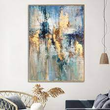
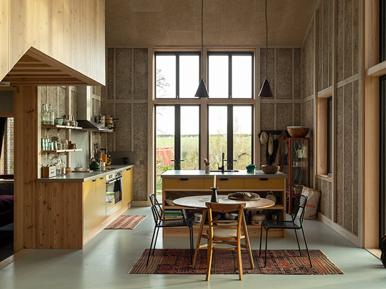
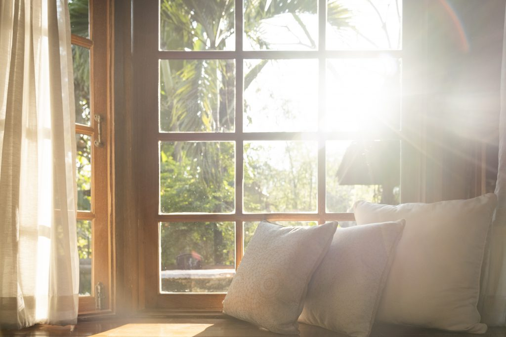
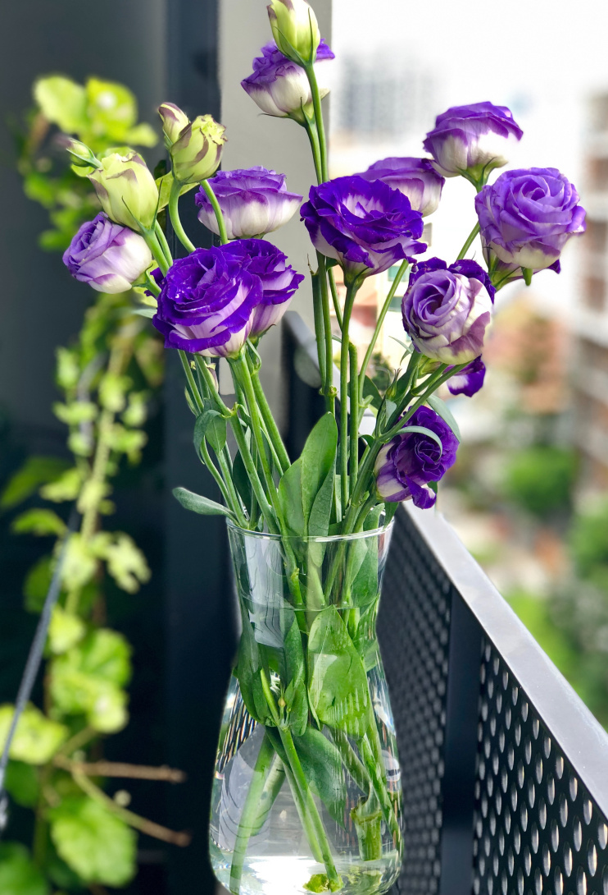

Plants

Plants are a great way to add some natural beauty to your home. They can help purify the air and create a calming atmosphere. Plus, they're low-maintenance and easy to care for. They can also help reduce stress and improve your mood. Plus, they're a great way to add some color and life to your space.They also make your home feel more inviting and welcoming to guests. They're a great way to add some personality to your decor, and they can be a fun hobby to take care of.
Artwork and Paintings
Artwork and paintings are a great way to add some personality and style to your home. They can help create a focal point in a room and add some color and texture to your decor. Plus, they're a great conversation starter and can showcase your personal taste and interests. And they can also help create a more sophisticated and polished look in your home. They're a great way to add some depth and dimension to your decor, and can even make a small room feel larger. Plus, they're a great investment piece that can appreciate in value over time.
Natural Materials
Natural materials are a great way to add some warmth and texture to your home. They can help create a more organic and inviting atmosphere, and can add some visual interest to your decor. Plus, they're often more sustainable and eco-friendly than synthetic materials, which can be a great way to reduce your carbon footprint. Some examples of natural materials include wood, stone, wool, and cotton.They can also be very durable and long-lasting, which can save you money in the long run. Natural materials are often very sturdy and can withstand wear and tear, making them a great investment piece for your home. Plus, they're often very versatile and can work with a variety of decor styles, from rustic to modern.
Natural Light
Natural light is good because it can help improve your mood, reduce eye strain, and even save you money on your energy bill. You can use it in your house by incorporating large windows, skylights or glass doors.It can also help make your house feel more spacious and welcoming. Plus, natural light can enhance the colors of your decor and create a more inviting atmosphere.
Natural Fresh Flowers
Natural fresh flowers are good because they can help improve your mood, reduce stress, and even boost your creativity. You can use them in your house by placing them in a vase or pot, or even creating a floral arrangement.They can add color, texture, and fragrance to your home. Flowers can also help purify the air and create a more relaxing environment. They are a simple and affordable way to add beauty to your living space.
Tweets by hubbubUK